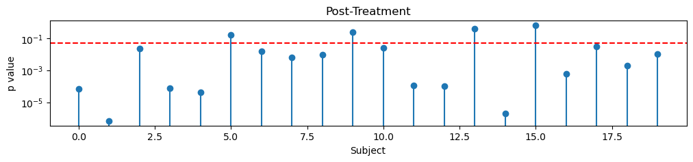
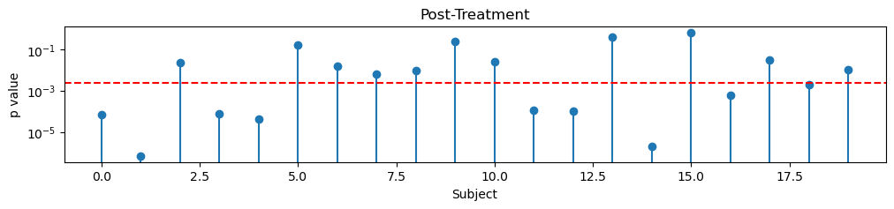
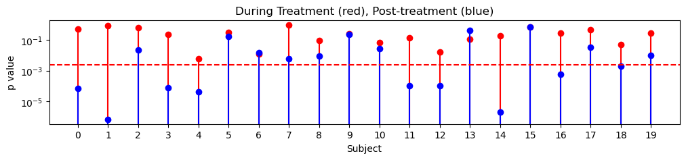
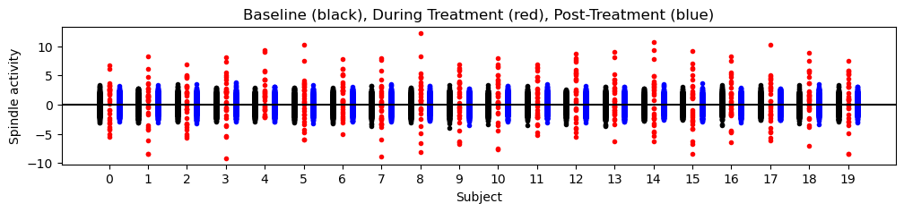
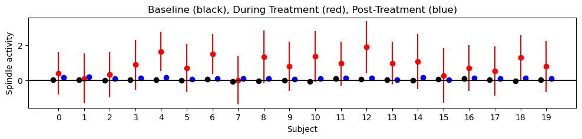
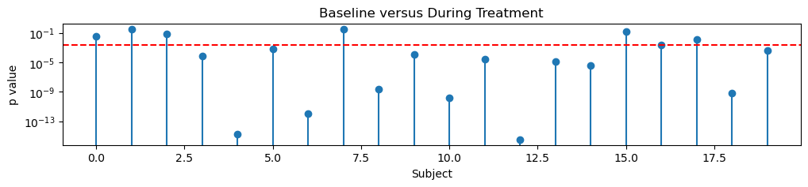

Code
# Load modules
import numpy as np
import matplotlib.pyplot as plt
import scipy.stats as stats
from pvalue_functions import *Q: How do data in the post-treatment condition differ from the treatment condition?
A: (Many Choice)
post-treatment condition.post-treatment condition.post-treatment condition.post-treatment condition.During the post-treatment condition: - we have many more samples to analyze (N=840) compared to the treatment condition (N=30). - the spindle estimates are less noisy compared to the treatment condition
Q: How do these two factors impact the evidence we have to reject the null hypothesis?
A: (Multiple Choice - all correct) - Sample Size: Collecting more spindle samples reduces random error and provides more precise estimates.
- Variability (or Noise) in Measurements: Lower variability in the spindle estimates post-treatment can make it easier to detect an effect.
Let’s repeat the analysis in Mini 2, but now examining the post-treatment spindle activity.
result = stats.ttest_1samp(post_treatment, popmean=0)
p_value_post = result.pvalueLet’s print and plot the p-values for each subject:
for k in np.arange(0,20):
print('Subject ', k, ', p=', np.array2string(p_value_post[k], precision=2))Subject 0 , p= 7.1e-05
Subject 1 , p= 6.84e-07
Subject 2 , p= 0.02
Subject 3 , p= 7.58e-05
Subject 4 , p= 4.28e-05
Subject 5 , p= 0.17
Subject 6 , p= 0.02
Subject 7 , p= 0.01
Subject 8 , p= 0.01
Subject 9 , p= 0.24
Subject 10 , p= 0.03
Subject 11 , p= 0.
Subject 12 , p= 0.
Subject 13 , p= 0.42
Subject 14 , p= 1.95e-06
Subject 15 , p= 0.69
Subject 16 , p= 0.
Subject 17 , p= 0.03
Subject 18 , p= 0.
Subject 19 , p= 0.01Q: For Subject 0, we find \(p=7.1e-05\). What does this mean?
A: (Multiple Choice)
# Plot the p-values post-treatment
plt.figure(figsize=(12, 2))
plt.stem(p_value_post);
plt.axhline(y=0.05, color='r', linestyle='--')
plt.xlabel('Subject'); plt.ylabel('p value'); plt.title('Post-Treatment'); plt.yscale('log')
Because we’ve computed 20 p-values (one from each subject), let’s again correct for multiple compariosns using a Bonferroni correction (see Multiplicity Unit).
plt.figure(figsize=(12, 2))
plt.stem(p_value_post);
plt.axhline(y=0.05/20, color='r', linestyle='--')
plt.xlabel('Subject'); plt.ylabel('p value'); plt.title('Post-Treatment'); plt.yscale('log')
print('Significant p-values post-treatment = ',np.sum(p_value_post < 0.05/20))Significant p-values post-treatment = 9
Q: Compare these two sets of p-values, calculated during treatment (Mini 2) and post-treatment. What does it mean?
A: (Multiple Choice)
Look at how small the p-values are post-treatment!
Remembe that, during treatment, the p-values are much larger, and we find no p-values less than 0.05/20.
We find many more significant p-values post-treatment (9 out of 20, after Bonferroni correction).
during treatment.post-treatment.More specifically, we find evidence of a significant change in spindle activity post-treatment in 9/20 subjects.
The PI is very excited with our new results, which appear to upend the literature.
The PI drafts the title for a high-impact paper:
Q: Review the characteristics of data during treatment and post-treatment. How might these characteristics impact the p-values we observe?
A: (Multiple Choice - all correct)
post-treatment, which can provide more precise estimates.treatment, which can provide less precise estimates.post-treatment, which can make it easier to detect an effect.treatment, which can make it harder to detect an effect.This is a very important question … and we haven’t fully answered it yet.
We collect many more samples post-treatment, and our measurements are more accurate post-treatment compared to during treatment. Both of these features impact the evidence we collect to reject the null hypothesis.
post-treatment results?Alert: Wait, I’m not so sure …
Moment of tension:
Q: EXTENSION PROGRAMMING EXERCISE: We’ve examined the spindle activity during treatment and post-treatment. How would you test the null hypothesis of spindle activity = 0 during the baseline condition?
We sought to answer the scientific question: - Does the spindle activity post-treatment differ from the baseline spindle activity?
To answer this question, we assumed a Null hypothesis of no difference in spindle activity post-treatment compared to 0.
We tested this null hypothsis for each subject, computing a p-value for each subject.
Because we computed 20 p-values (one for each subject), we corrected for multiple comparsions using a Bonferroni correction (see Multiplicity Unit).
We found many p-values small enough to reject the null hypothesis.
In other words, in this exploratory analysis, we found evidence that the spindle activity during post-treatment differs from baseline.
This differs from our results during treatment, in which we found no evidence that the spindle activity during treatment differs from baseline.
In Mini 3, we may have found an interesting result: spindle activity post-treatment, but not during treatment, differs from baseline.
Scientifically, we might conlcude that our treatment has a long-lasting effect, impacting spindle activity post-treatment.
To infer these results, we computed and compared p-values, testing specific null hypotheses for each subject.
We’ve hinted above that something isn’t right … let’s now dive in and identify what we could have done differently.
Our initial approach has focused exclusively on p-values.
P-values indicate how much evidence we have to reject a null hypothesis given the data we observe.
Let’s again plot the p-values during treatment and post-treatment for each subject:
plt.figure(figsize=(12, 2))
l1 = plt.stem(p_value_during, 'or')
l2 = plt.stem(p_value_post, 'ob')
plt.yscale('log')
plt.axhline(y=0.05/20, color='r', linestyle='--')
plt.xticks(np.arange(0,20));
plt.xlabel('Subject'); plt.ylabel('p value');
plt.title('During Treatment (red), Post-treatment (blue)');
Q: For each subject, compare the p-values during treatment (red) versus post-treatment (blue). What do you observe?
A: (Multiple Choice)
post-treatment compared to during treatment.post-treatment compared to during treatment.We’ve focused on p-values to draw our scientific conclusions.
However, we’ve almost completely ignored the spindle measurements themselves!
Let’s return to the spindle activity measurements themselves, and see how these measurements relate to the p-values.
Q: Consider Subject 4. We find during treatment p=0.01, and post-treatment p=4.28e-05. So, the p-value is much smaller post-treatment. How do you think the spindle activity differs during treatment versus post-treatment.
A: (Multiple Choice)
post-treatment, so I expect a big effect - I expect spindle activity that differs from 0.treatment, so I expect a small effect - I expect spindle activity near 0.Q: Consider the p-values computed for all subjects. How do you expect the spindle activity behaves during treatment and post-treatment?
A: (Multiple Choice) 1. Because we do not find significnat p-values during treatment, I expect these values to appear near 0. 2. Because we do find significnt p-values post-treatment, I expect these values to differ from 0. 3. (Correct) It’s dangerous to deduce effect size from the p-value.
Now, let’s return to the spindle activity and look at those values directly.
Let’s begin with an example from Subject 4.
plt.figure(figsize=(2, 2))
plt.plot(np.tile(0,(840,1))-0.25, baseline[:,4], '.', color='k')
plt.plot(np.tile(0,(30,1)), during_treatment[:,4], '.', color='r')
plt.plot(np.tile(0,(840,1))+0.25, post_treatment[:,4], '.', color='b')
plt.axhline(y=0, color='k')
plt.xlabel('Subject 4'); plt.ylabel('Spindle activity'); plt.title('Baseline (black), During Treatment (red), Post-Treatment (blue)'); #plt.ylim([0,1]);
plt.xticks([]);
For Subject 4, we found:
treatment p=0.01post-treatment p=4.28e-05From these p-values, we might expect:
treatment near 0 (i.e., similar to baseline).post-treatment far from 0 (i.e., different from baseline).But, we find the opposite.
treatment far from 0 (i.e., different from baseline).post-treatment near 0 (i.e., similar to baseline).Let’s make similar plots for all 20 subjects.
plt.figure(figsize=(12, 2))
for k in np.arange(0,20):
plt.plot(np.tile(k,(840,1))-0.25, baseline[:,k], '.', color='k')
for k in np.arange(0,20):
plt.plot(np.tile(k,(30,1)), during_treatment[:,k], '.', color='r')
for k in np.arange(0,20):
plt.plot(np.tile(k,(840,1))+0.25, post_treatment[:,k], '.', color='b')
plt.axhline(y=0, color='k')
plt.xlabel('Subject'); plt.ylabel('Spindle activity'); plt.title('Baseline (black), During Treatment (red), Post-Treatment (blue)'); #plt.ylim([0,1]);
plt.xticks(np.arange(0,20));
Q: Looking at the plots of spindle measurements, do you observe an effect during treatment (red) compared to baseline (black)?
A: (Short answer)
Q: Looking at the plots of spindle measurements, do you observe an effect post-treatment (red) compared to baseline (black)?
A: (Short answer)
post-treatment, I expected these values to differ from 0 and from the distribution of baseline values. But I don’t see that here …Q: Looking at the plots of spindle measurements, are these plots consistent with your p-value results?
A: (Short answer)
post-treatment and concluded that there’s an effect post-treatment, but not during treatment. However, these plots of spindle activity aren’t consistent with our conclusions.It’s nice to visualize all of the data, but doing so can also be overwhelming.
Let’s summarize the spindle activity in for each subject by ploting the mean and the standard error of the mean.
# Plot the spiking from an example neuron.
plt.figure(figsize=(12, 2))
for k in np.arange(0,20):
mn = np.mean(baseline[:,k]);
sd = np.std( baseline[:,k]);
K = np.shape(baseline)[0];
plt.plot(k-0.2, mn, 'o', color='k')
plt.plot([k-0.2,k-0.2], [mn-2*sd/np.sqrt(K), mn+2*sd/np.sqrt(K)], color='k')
for k in np.arange(0,20):
mn = np.mean(during_treatment[:,k]);
sd = np.std( during_treatment[:,k]);
K = np.shape(during_treatment)[0];
plt.plot(k, mn, 'o', color='r')
plt.plot([k,k], [mn-2*sd/np.sqrt(K), mn+2*sd/np.sqrt(K)], color='r')
for k in np.arange(0,20):
mn = np.mean(post_treatment[:,k]);
sd = np.std( post_treatment[:,k]);
K = np.shape(post_treatment)[0];
plt.plot(k+0.2, mn, 'o', color='b')
plt.plot([k+0.2,k+0.2], [mn-2*sd/np.sqrt(K), mn+2*sd/np.sqrt(K)], color='b')
plt.axhline(y=0, color='k')
plt.xlabel('Subject'); plt.ylabel('Spindle activity'); plt.title('Baseline (black), During Treatment (red), Post-Treatment (blue)');
plt.xticks(np.arange(0,20));
Q: Looking at the summary plots of the spindle activty for each subject, do you observe an effect during treatment (red)?
A: (Short answer)
treatment appears larger than baseline. The standard error is also large. Why are the p-values during treatement not significant?Q: Looking at the summary plots of the spindle activty for each subject, do you observe an effect post-treatment (blue)?
A: (Short answer)
post-treatment, I expect these values to differ from 0. But I don’t see that here, the black and blue dots appear to overlap near 0.Q: Looking at the summary plots of the spindle activty for each subject, are these plots consistent with your p-value results?
A: (Short answer)
post-treatment, but not during treatment. However, these plots of spindle activity aren’t consistent with our conclusions.Let’s summarize what we’ve found so far:
| State | p-values | spindle activity |
|---|---|---|
| During treatment | p>0.05/20 (not significant) | mean spindle activity > 0 |
| Post-treatment | p<<0.05/20 (signficiant) | mean spindle activity \(\approx\) 0. |
Something’s not adding up here …
During treatment, we find no evidence of a signficant change in spindle activity from baseline (i.e., the p-values are big). However, looking at the mean spindle activity, we find spindle activities that often exceed 0.
Post-treatment, we find evidence in 9/20 subject of a signficant change in spindle activity from baseline (i.e., the p-values are small). However, looking at the mean spindle activity, we find those values tend to appear near 0.
Q: Why do the spindle activities during treatment often exceed 0 (i.e., exceed baseline) spindle activity, but p>0.05? And, why are the post-treatment spindle activities so near 0 (i.e., so near the baseline) spindle activity, but p<<0.05?
A: I’m confused!
Alert:
These confusing conclusions occur because we’ve made two common errors:
We compared p-values between the treatment and post-treatment groups.
We focused exclusively on p-values without thinking more carefully about the data used to compute those p-values.
The p-value measures the strength of evidence against the null hypothesis.
Three factors can impact the strength of evidence:
Q: How does the sample size differ during treatment versus post-treatment? How might this impact the results?
A: - We have many more observations post-treatment (N=840). Therefore, we can accumulate enough evidence to detect a weak effect post-treatment. - We have few observations during treatment (N=30). Therefore, even though the effect may be strong, we don’t have enough evidence to reject the null hypothesis of no difference from 0 (i.e., no difference from baseline) during treatment.
Q: How does the effect size differ during treatment versus post-treatment? How might this impact the results?
A: - The effect size appears small post-treatment (the mean values are near zero). Therefore, although we detect a change post-treatment, this change is small. - The effect size appears large during treatment (the mean values exceed zero). However, due to the limited number of samples and variability in the estimates, we do not have enough evidence to reject the null hypothesis of no difference from 0 (i.e., no difference from baseline) during treatment.
Q: How does the measurement variability differ during treatment versus post-treatment? How might this impact the results?
A:
We have less measurement variability post-treatment. Lower variability makes it easier to detect a difference from 0 (i.e., difference from baseline).
We have more measurement variability during treatment . Higher variability makes it harder to detect a difference from 0 (i.e., difference from baseline) and harder to reject the null hypothesis.
We began with the scientific statement:
“I expect during treatment that spindle activity exceeds the baseline spindle activity.”
Our initial approach focused on computing and comparing p-values.
That’s a bad idea.
We’re not interested in comparing the evidence we have for each null-hypothesis (the p-value); the evidence depends on the sample size, effect size, and measurement variability.
Instead, we’re more interested in comparing the spindle activity between condidtions.
In other words, we’re intested in the effect size, not the p-value.
This suggests a different analysis path forward for an improved approach.
We can answer the same scienfitic question by comparing the spindle activities between conditions, not the p-values.
We’ve started to see this in the plots of spindle activity at baseline, during treatment, and post-treatment.
For more analysis (e.g., different statistical test and effect size) continue on to the other Minis.
Originally (in Mini 2), we considered the null hypothesis:
That was a fine initial approach.
However, it limited us to the small number (N=30) of noisy samples recorded during treatment for each subject.
We focused our analysis on whether these values differed from 0 (the baseline spindle activity).
And we found no evidence to reject the null hypothesis.
While this initial appraoch does test our scientific question, there’s a more powerful appraoch.
Instead of testing whether spindle activity during treatment differs from 0, let’s directly compare the spindle activity during baseline and treatment.
In particular, let’s now consider a different null hypothesis:
This null hypothesis is consistent with our original scientific question (does the spindle activity during treatment differ from baseline).
In our original analysis, we compared the spindle activity during treatment to a fixed value of 0.
In doing so, we ignored the many samples (N=840) collected during baseline.
Now, in our new appraoch, we’ll use all of the samples collected during the baseline spindle activity, and incorportae these many baseline samples into our analysis.
To test our new null hypothesis, we’ll apply a different test:
result = stats.ttest_ind(baseline, during_treatment, alternative='less')
p_value_baseline_vs_during = result.pvalue
for k in np.arange(0,20):
print('Subject ', k, ', p=', np.array2string(p_value_baseline_vs_during[k], precision=4))Subject 0 , p= 0.0364
Subject 1 , p= 0.3733
Subject 2 , p= 0.0704
Subject 3 , p= 7.712e-05
Subject 4 , p= 1.7514e-15
Subject 5 , p= 0.0008
Subject 6 , p= 1.0667e-12
Subject 7 , p= 0.3702
Subject 8 , p= 2.5241e-09
Subject 9 , p= 0.0001
Subject 10 , p= 1.6325e-10
Subject 11 , p= 2.7851e-05
Subject 12 , p= 3.2021e-16
Subject 13 , p= 1.5163e-05
Subject 14 , p= 4.2159e-06
Subject 15 , p= 0.1733
Subject 16 , p= 0.0024
Subject 17 , p= 0.0152
Subject 18 , p= 7.0189e-10
Subject 19 , p= 0.0004plt.figure(figsize=(12, 2))
plt.stem(p_value_baseline_vs_during);
plt.axhline(y=0.05/20, color='r', linestyle='--')
plt.xlabel('Subject'); plt.ylabel('p value'); plt.title('Baseline versus During Treatment'); plt.yscale('log')
print('Significant p-values during treatment = ',np.sum(p_value_baseline_vs_during < 0.05/20))Significant p-values during treatment = 14
Q: Interpret these p-value results in terms of the null hypothesis.
A: We conclude that, in most cases, we reject the null hypothesis of no difference in spindle activity between baseline versus during treatment. We conclude that the spindle activity is higher during treatment compared to baseline in most subjects (14/20).
Q: Compare the results of these tests for each human to the results in Mini 2.
A: In Mini 2, we computed p-values during treatment versus 0. Now, we compute p-values during treatment versus baseline. These are different tests. The latter tests more directly our scientific question.
What is the scientifc question we’re actually trying to answer?
CI are big - why?
Effect size (meaningful?)
Do there exist subjects for which there is a significant effect? NO
Estimate effect size and responders
In Intro: initial H is some people respond and some don’t
(PENDING): estimate effect size during & post, and compare.
(PENDING)